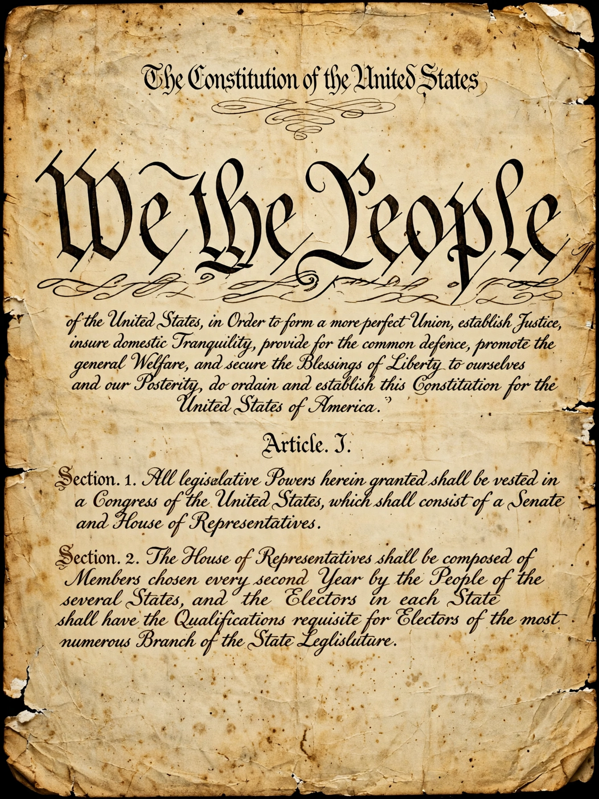

The Constitution of the United States is the supreme law of the United States of America. Written at the Constitutional Convention in Philadelphia in 1787 and in effect since 1789, it replaced the Articles of Confederation and established a federal republic with three separated branches of government. It is the world's longest-surviving written charter of government. The original document, signed by 39 delegates on 17 September 1787, is held by the National Archives in Washington, D.C. Its famous opening words are "We the People".

| Constitution of the United States | |
|---|---|
| Created | September 17, 1787 |
| Ratified | June 21, 1788 |
| Effective | March 4, 1789 |
| Location | National Archives, Washington, D.C. |
| Signatories | 39 of the 55 delegates |
| Amendments | 27 (first ten = Bill of Rights) |
The Constitution consists of a Preamble and seven Articles. Article I vests legislative power in a bicameral Congress — a Senate with two members per state and a House of Representatives apportioned by population. Article II creates the executive branch headed by the President. Article III establishes the federal judiciary, headed by the Supreme Court. Article IV addresses relations among the states and between states and the federal government; Article V sets out the amendment process; Article VI declares the Constitution supreme law; Article VII governed ratification, which was achieved when New Hampshire became the ninth state to ratify on 21 June 1788.
The document embodies popular sovereignty, federalism, separation of powers with checks and balances, and judicial review — the power of courts to strike down unconstitutional laws, asserted by the Supreme Court in Marbury v. Madison (1803). Its drafting involved hard compromises, including the Three-Fifths Compromise on representation of enslaved people and the Connecticut Compromise creating the bicameral legislature.
The Constitution has been amended 27 times. The first ten amendments, the Bill of Rights (1791), guarantee freedoms of speech, religion and the press, the right to bear arms, protection against unreasonable searches, due process, and other rights. Later amendments abolished slavery (13th, 1865), established equal protection and birthright citizenship (14th, 1868), extended the vote to Black men (15th, 1870) and to women (19th, 1920), imposed and repealed Prohibition (18th and 21st), limited presidents to two terms (22nd, 1951) and lowered the voting age to 18 (26th, 1971). The most recent, the 27th Amendment on congressional pay, was ratified in 1992 after being proposed in 1789.
Constitutional interpretation has been contested between originalist and "living Constitution" approaches. The document has influenced written constitutions around the world, and its framers — notably James Madison, "Father of the Constitution" — drew on Montesquieu, Locke, English law and classical republicanism, defending the design in The Federalist Papers.
Bill of Rights · James Madison · Constitutional Convention · The Federalist Papers · Supreme Court
From Wikipedia, the free encyclopedia.